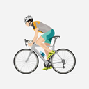

Alexey Lutsenko

Dorsal: 11
07/09/1992 - Kazajistán

Dorsal: 11
07/09/1992 - Kazajistán
Dorsal: 12
07/04/1990 - Nueva Zelanda
Dorsal: 13
21/01/1991 - República Checa
Dorsal: 14
13/02/1994 - Francia
Dorsal: 15
12/05/2002 - Alemania
Dorsal: 16
24/11/2004 - España
Dorsal: 17
13/09/1994 - Australia
Dorsal: 18
23/06/2001 - Bélgica